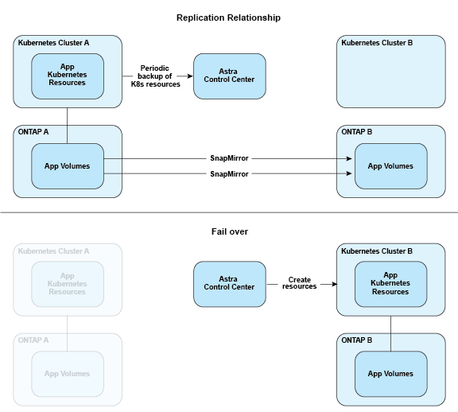

문서 변경 요청
문서 변경 요청 이 페이지 편집
이 페이지 편집 기여하는 방법 자세히 알아보기
기여하는 방법 자세히 알아보기데이터 보호
기여자
Astra Control Center에서 사용 가능한 데이터 보호 유형과 이를 사용하여 앱을 보호하는 최선의 방법에 대해 알아보십시오.
스냅샷, 백업 및 보호 정책
스냅샷과 백업 모두 다음과 같은 유형의 데이터를 보호합니다.
-
애플리케이션 자체입니다
-
애플리케이션과 연결된 모든 영구 데이터 볼륨
-
응용 프로그램에 속하는 모든 리소스 아티팩트가 있습니다
snapshot_은 앱과 동일한 프로비저닝된 볼륨에 저장된 앱의 시점 복사본입니다. 대개 빠릅니다. 로컬 스냅샷을 사용하여 애플리케이션을 이전 시점으로 복원할 수 있습니다. 스냅샷은 빠른 클론에 유용합니다. 스냅샷에는 구성 파일을 포함하여 앱의 모든 Kubernetes 객체가 포함됩니다. 스냅샷은 동일한 클러스터 내에서 앱을 클론 생성하거나 복원하는 데 유용합니다.
백업 _ 은(는) 스냅샷을 기반으로 합니다. 외부 오브젝트 저장소에 저장되며, 이로 인해 로컬 스냅샷과 비교하여 촬영 속도가 느려질 수 있습니다. 앱 백업을 동일한 클러스터에 복원하거나 백업을 다른 클러스터에 복원하여 앱을 마이그레이션할 수 있습니다. 또한 백업의 보존 기간을 더 길게 선택할 수도 있습니다. 이러한 백업은 외부 개체 저장소에 저장되므로 일반적으로 서버 장애 또는 데이터 손실 시 스냅샷보다 더 뛰어난 보호 기능을 제공합니다.
보호 정책 _ 은(는) 해당 앱에 대해 정의한 일정에 따라 스냅샷, 백업 또는 둘 모두를 자동으로 생성하여 앱을 보호하는 방법입니다. 또한 보호 정책을 사용하여 스케줄에 보관할 스냅샷과 백업의 수를 선택하고 스케줄 세분화 수준을 다르게 설정할 수 있습니다. 보호 정책을 통해 백업 및 스냅샷을 자동화하는 것이 각 애플리케이션이 조직의 요구 사항과 SLA(서비스 수준 계약) 요구 사항에 따라 보호되도록 하는 가장 좋은 방법입니다.

|
_최근 백업 _ 이(가) 있을 때까지 완전히 보호할 수 없습니다. 백업은 영구 볼륨으로부터 멀리 떨어진 개체 저장소에 저장되기 때문에 이 작업이 중요합니다. 장애 또는 사고로 인해 클러스터와 관련 영구 스토리지가 삭제되면 복구할 백업이 필요합니다. 스냅샷을 사용하면 복구할 수 없습니다. |
복제
clone_은 앱, 해당 구성 및 영구 데이터 볼륨의 정확한 복제입니다. 동일한 Kubernetes 클러스터 또는 다른 클러스터에 클론을 수동으로 생성할 수 있습니다. 애플리케이션 및 스토리지를 Kubernetes 클러스터 간에 이동해야 하는 경우 앱 클론을 생성하는 것이 유용할 수 있습니다.
원격 클러스터에 복제
Astra Control을 사용하면 NetApp SnapMirror 기술의 비동기식 복제 기능을 사용하여 낮은 RPO(복구 시점 목표) 및 낮은 RTO(복구 시간 목표)로 애플리케이션에 대한 비즈니스 연속성을 구축할 수 있습니다. 이 기능을 구성하면 애플리케이션에서 클러스터 간에 데이터 및 애플리케이션 변경사항을 복제할 수 있습니다.
Astra Control은 애플리케이션 스냅샷 복사본을 원격 클러스터에 비동기식으로 복제합니다. 복제 프로세스에는 SnapMirror에 의해 복제된 영구 볼륨의 데이터와 Astra Control에 의해 보호되는 애플리케이션 메타데이터가 포함됩니다.
앱 복제는 다음과 같은 방식으로 앱 백업 및 복원과 다릅니다.
-
* 앱 복제 *: Astra Control을 사용하려면 NetApp SnapMirror를 지원하도록 구성된 각 ONTAP 스토리지 백엔드를 통해 소스 및 대상 Kubernetes 클러스터를 사용하고 관리해야 합니다. Astra Control은 정책 기반 애플리케이션 스냅샷을 생성하여 원격 클러스터에 복제합니다. NetApp SnapMirror 기술은 영구 볼륨 데이터를 복제하는 데 사용됩니다. Astra Control은 페일오버하기 위해 대상 Kubernetes 클러스터의 앱 객체를 대상 ONTAP 클러스터의 복제된 볼륨으로 재생성하여 복제된 앱을 온라인으로 전환할 수 있습니다. 대상 ONTAP 클러스터에 영구 볼륨 데이터가 이미 있으므로 Astra Control은 페일오버에 대한 빠른 복구 시간을 제공할 수 있습니다.
-
* 애플리케이션 백업 및 복원 *: 애플리케이션을 백업할 때 Astra Control은 애플리케이션 데이터의 스냅샷을 생성하고 이를 오브젝트 스토리지 버킷에 저장합니다. 복원이 필요한 경우 버킷 내의 데이터를 ONTAP 클러스터의 영구 볼륨에 복사해야 합니다. 백업/복원 작업에서는 보조 Kubernetes/ONTAP 클러스터를 사용하고 관리할 필요가 없지만, 추가 데이터 복사본을 사용할 경우 복원 시간이 길어질 수 있습니다.
앱을 복제하는 방법에 대한 자세한 내용은 을 참조하십시오 "SnapMirror 기술을 사용하여 원격 시스템에 애플리케이션을 복제합니다".
다음 이미지는 복제 프로세스와 비교하여 예약된 백업 및 복원 프로세스를 보여 줍니다.
백업 프로세스는 데이터를 S3 버킷으로 복사하고 S3 버킷에서 복원:

반면, 복제는 ONTAP로 복제하여 수행하지만 페일오버로 Kubernetes 리소스를 생성합니다.
